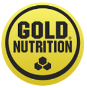

|
Creatina Creapure® 150 g | €9.99 | Ir para Produto |
| Creatina Monoidratada | €15.99 | Ir para Produto | |
|  | Creatine Power Mix | €19,99 | Ir para Produto |
 |
Micronized Creatine Monohydrate | €13,90 | Ir para Produto |
O que é Creatina?
Quem busca o máximo desempenho nos treinos com certeza já deve ter ouvido falar da creatina. Trata-se de um composto químico que tem se tornado sinônimo de melhores resultados no ganho de massa magra.
Ela é sintetizada no fígado, nos rins e no pâncreas. A capacidade diária de produção do nosso corpo fica em torno de 1 g por dia durante o período de 24 horas.
Para que serve a Creatina?
Uma das melhores alternativas é a suplementação com creatina monohidratada da Growth Supplements. Para quem pratica exercícios físicos, especialmente a musculação, a creatina se torna uma das melhores amigas. A maior parte dessa substância está presente na musculatura esquelética do nosso corpo – ou seja, ela se concentra justamente nos músculos exercitados. Os níveis de creatina sofrem influências diversas, desde o preparo físico até a quantidade ingerida na dieta. A quantidade também varia de acordo com a idade e a presença de determinados hormônios.

Benefícios da Creatina
A creatina é de fato um produto que funciona e leva inúmeros benefícios para quem a consome. Entre os melhores benefícios da creatina, estão:
- Aumento de força e potência: a creatina age como uma reserva de energia a curto prazo, beneficiando o rendimento do atleta durante o treinamento. O produto aumenta os níveis de energia nos músculos, aumentando a força e a potência.
- Fortalecimento dos ossos: a ingestão da creatina, unida a constantes treinamentos, fortalece toda a estrutura óssea corporal. Com o avanço da idade, o indivíduo vai sofrendo um enfraquecimento ósseo, e esse produto evita ao máximo essa questão.